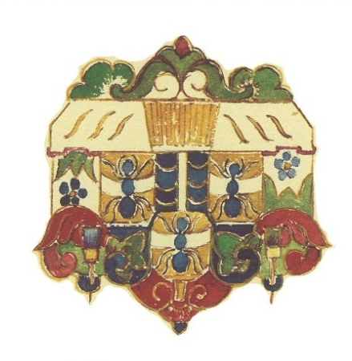
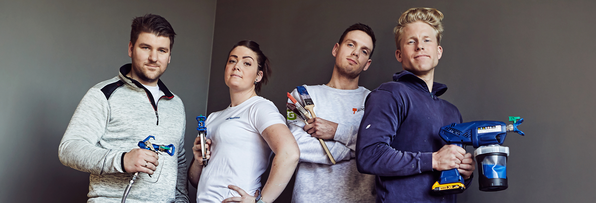

For kunder
Finn en seriøs malermester
Velg blant medlemsbedrifter med høy faglig kompetanse og trygg oppfølging.
Se medlemsbedrifterDenne nettsiden tilhører to organisasjoner. Velg riktig inngang for informasjonen du trenger.

Finn medlemsbedrifter, les om trygg handel, garantiordning og laugets arbeid.
Gå til Malermesterlauget →Informasjon om lærlingløpet, lærebedrifter, oppfølging og veien fram mot fagbrev.
Gå til Opplæringskontoret →Logoen til Oslo Malermesterlaug er foreløpig en tydelig plassholder og kan enkelt erstattes med den originale logofilen.
Finn en seriøs fagbedrift med dokumentert kompetanse, ryddige avtaler og trygg oppfølging.
En enkel og tydelig forside gjør det lett å finne riktig informasjon.
Velg blant medlemsbedrifter med høy faglig kompetanse og trygg oppfølging.
Se medlemsbedrifterLes om lærlingløpet, lærebedrifter og mulighetene i malerfaget.
Ta kontaktOpplæringskontoret følger opp lærlinger og lærebedrifter gjennom hele læretiden og bidrar til god kvalitet i fagopplæringen.

Mesterbedrifter har faglig ledelse og solid kunnskap.
Private kunder kan være dekket med inntil 50 000 kroner.
En tydelig vei videre dersom kunde og bedrift ikke blir enige.
Medlemmene forplikter seg til kvalitet og seriøs drift.
Listen hentes automatisk fra filen js/medlemmer.js.
Styremedlemmer kan endres enkelt i filen js/styret.js.
Oslo Malermesterlaug samler seriøse maler- og byggtapetserbedrifter. Opplæringskontoret følger opp lærlinger og lærebedrifter.
Vi hjelper kunder, medlemsbedrifter, lærlinger og lærebedrifter videre.